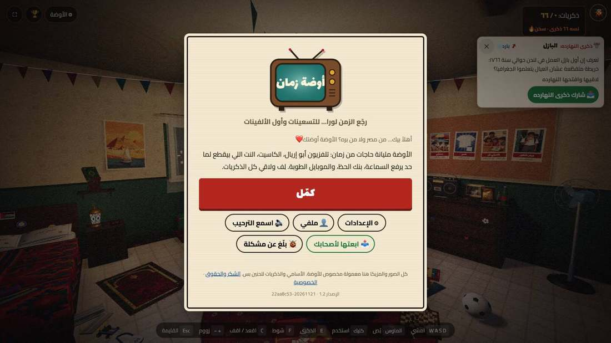
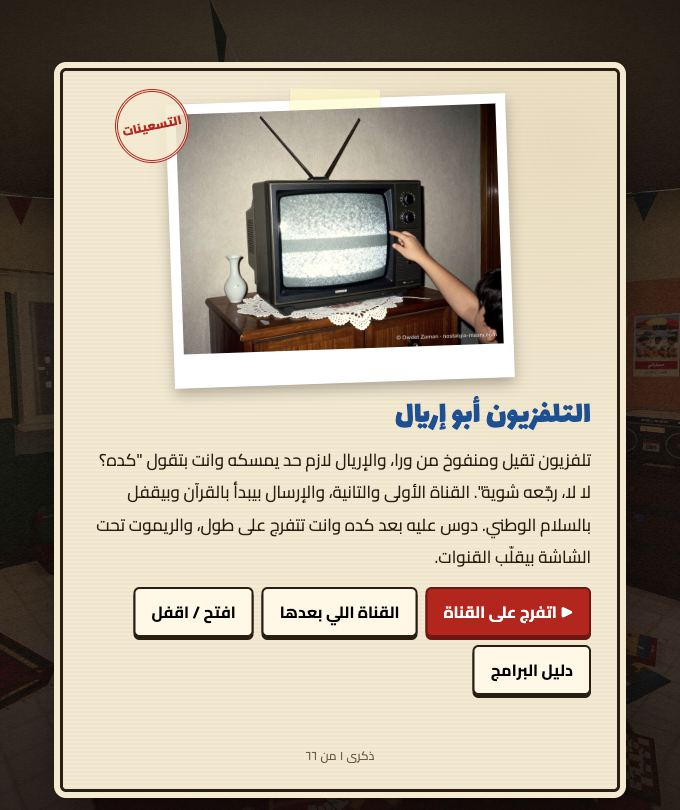
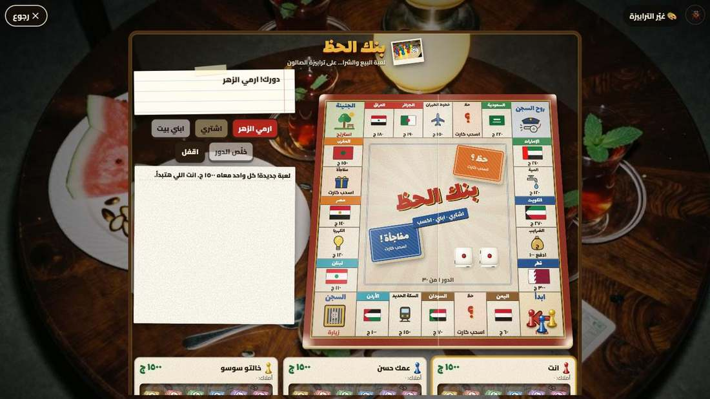
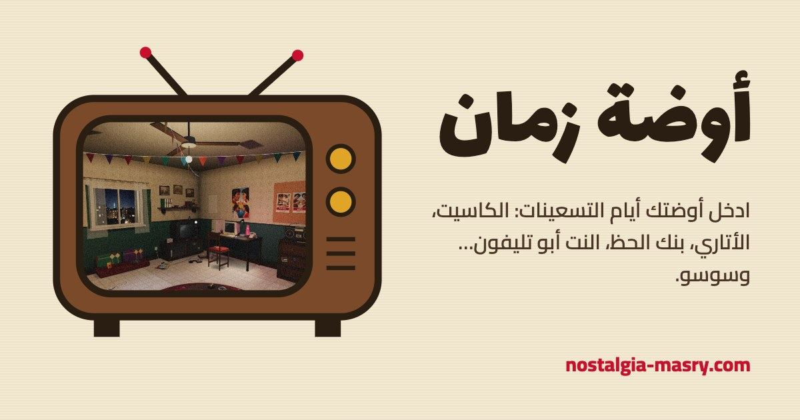

فيه أوضات لسه ريحتها في مناخيرك. تلفزيون لازم تضربه من جنبه، وكاسيت بترجّع شريطه بقلم رصاص، ونت بيقطع أول ما حد يرفع سماعة التليفون. كنت عايز أحط الأوضة دي في المتصفح، عشان أي حد اتربّى في مصر وقتها يقدر يدخلها تاني.
اسمها أوضة زمان، أو Nostalgia Masry، وشغالة دلوقتي على nostalgia-masry.com. أنا بحب أعمل UIs مع Claude، والمشروع ده خلّاني أبني عالم كامل بدل شاشة واحدة.
الإلهام
الفكرة مش فكرتي. The 90s Room بتاعة Boared Games هي أوضة نوستالجيا بتمشي فيها، وفضلت في دماغي. ليها credit في المشروع، وكل اللي جوه أوضتي معمول ليها مخصوص: مصري، بالعامية المصرية، وبصوره وأصواته وألعابه الخاصة.
المصدر التاني هو الذاكرة. قبل ما أبني أي حاجة طلبت من Claude يجمّع اللي أي طفل مصري وقتها هيعرفه: مجلات الأطفال الأسبوعية، شنطة المدرسة أم قفل، السايبر والماسنجر، أرقام النت المجاني اللي بتبدأ بـ 0777، فوازير رمضان، وماتش نهائي الكل كان بيتفرج عليه. وكل agent في المشروع بيحكم على شغله بسؤال واحد: هل واحد عاش من 1990 لـ 2010 هيبتسم ويقول «ياااه»؟
تلات أيام، حوالي تمان ساعات
بنيتها على تلات أيام في نوفمبر 2026، ونزّلت النسخة 1.2 في اليوم التالت. واللي صرفته من وقتي أنا كان حوالي تمان ساعات. المشروع فيه 117 commit، وباقي الكتابة عملها Claude Code وفريق agents، كل واحد مسؤول عن حتة: الواجهة، الألعاب، الموبايلات، الأمان، الاستضافة، الحقوق، والمحتوى الإسلامي.
- 1الأوضة وقواعدهاالأوضة ثلاثية الأبعاد، أول الذكريات، والقواعد اللي كل agent بيلتزم بيها قبل ما يلمس أي حاجة.
- 2الموبايلات وإطلاق آمنمراجعة على الموبايل، خطوط ومكتبة three.js مستضافة عندنا، بوابة أمان قبل أي push، وأول نسخة علنية على Cloudflare.
- 3اللُعَب والراديوعربية لعبة ثلاثية الأبعاد وسباق صغير، لعبة العساكر البلاستيك، ساعة الحيطة القديمة، وراديو بخمستاشر محطة.
بتلف في الأوضة

الأوضة HTML وJavaScript عادي مع three.js، من غير framework ومن غير build step. كل صورة معمولة مخصوص للأوضة، والإضاءة بتعمل أغلب الشغل: لمبة صفرا ضعيفة، ونور التلفزيون، وأركان مضلّمة، فتحس إنها أوضة إنت فاكرها، مش صالة عرض.

العب بكل حاجة
أنا ما كنتش عايز متحف. التلفزيون فيه دليل برامج ومقاطع جواه، ومؤشر الراديو بيفتح محطات حقيقية، وكمبيوتر العيلة بيعمل dial-up والخط بيقطع لما حد يرفع السماعة. على الطبلية فيه ألعاب بمنافسين من الكمبيوتر بأسامي مصرية: لعبة بيع وشراء بدول عربية اسمها بنك الحظ، وطرنيب، وشطرنج، وطاولة وغيرها. وفيه أسطوانات PS2، وسوسو القطة بتنام على السرير وتجري ورا الكورة.

القواعد اللي حطيتها
أي مشروع نوستالجيا سهل يقلب نسخ. عشان كده القواعد مكتوبة، وكل agent بيحمّلها الأول:
- مستوحى، مش منسوخ. البوسترات واللوجوهات والعبوات في الأوضة مخترعة. الماركات الحقيقية بتظهر ككلام بس جوه ذكرى.
- الأغاني والمسلسلات والماتشات الحقيقية بتتفتح من مصادرها الرسمية. embeds أو لينكات، عمرها ما تتنسخ.
- ميديا بترخيص حر بس، ومذكور صاحبها دايمًا.
- دافية وتنفع للعيلة، ومن غير وشوش ناس حقيقيين في الصور المولّدة.
آمنة وخاصة
الخصوصية والأمان مهمين عندي، فبنيتها كده من الأول. وقت ما بكتب ده، مفيش حسابات ولا cookies ولا إعلانات، وإعداداتك وتقدّمك بيفضلوا في متصفحك. هي بتحسب أرقام عامة بس، من غير ما تعرف الزوار مين، زي كام مرة لعبة اتفتحت، وبتحترم Do Not Track. قبل كل إصدار فيه مراجعة أمان بتقرا الـ code، وبوابة بتمنع أي push بيكسر القواعد، فقدرت أمشي بسرعة من غير استهتار. ده وصف النسخة الحالية وممكن يتغيّر لما الأوضة تكبر، وصفحة الخصوصية دايمًا فيها التفاصيل الحالية.
اللي اتعلمته
القواعد الأول، وبعدين السرعة. كتابة القواعد وأدوار الـ agents في اليوم الأول هي اللي خلّت تلات أيام من التغيير السريع متناسقة.
التفاصيل هي اللي بتوصّل الإحساس. الإريال لازم تمسكه بإيدك، وخط بيقطع، وساعة بتدق كل ساعة. حاجات صغيرة بتشتغل عملت أكتر من models مفصّلة.
الموبايل هو الجمهور الحقيقي. أغلب الناس هتفتحها على موبايل متوسط وعلى نت الموبايل، فالأوضة مبنية خفيفة.
اللي جاي
حاجات وذكريات أكتر، وصور للكروت القليلة اللي لسه مستنية صورة، وفي الخطة أماكن تانية غير الأوضة دي. ولو إنت كمان اتربّيت في مصر زمان، ادخل الأوضة، وقولّي إيه اللي ناقص فيها.
ادخل، وساعدها تكبر

ادخل الأوضة على nostalgia-masry.com. بتشتغل على أي متصفح، على الموبايل أو اللابتوب. ولو عجبتك وعايز تساعدني أكمّل أضيف ذكريات، تقدر تدعمها على Ko-fi. الدفع بيحصل على Ko-fi، وأنا عمري ما بشوف بيانات الكارت بتاعتك. وتقدر كمان تاخد حتة من الأوضة معاك البيت من محل Nostalgia Masry على Etsy.
الأوضة والمقال ده اتبنوا بـ Claude Code.